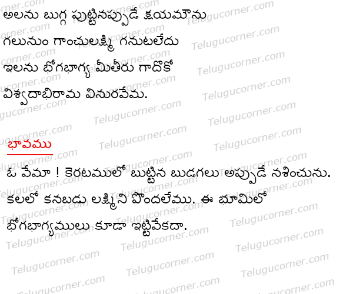

Alanu bugga puttinappude kshyamounu poem
Aalanu bugga Padyam from Vemana Satakam, This poem meaning in telugu and english The bubbles that are in the wave will just perish. Lakshmi (goddess of wealth) cannot be found in a dream. Similarly, luxurious cannot be constant on this earth.
